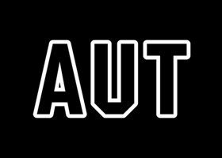
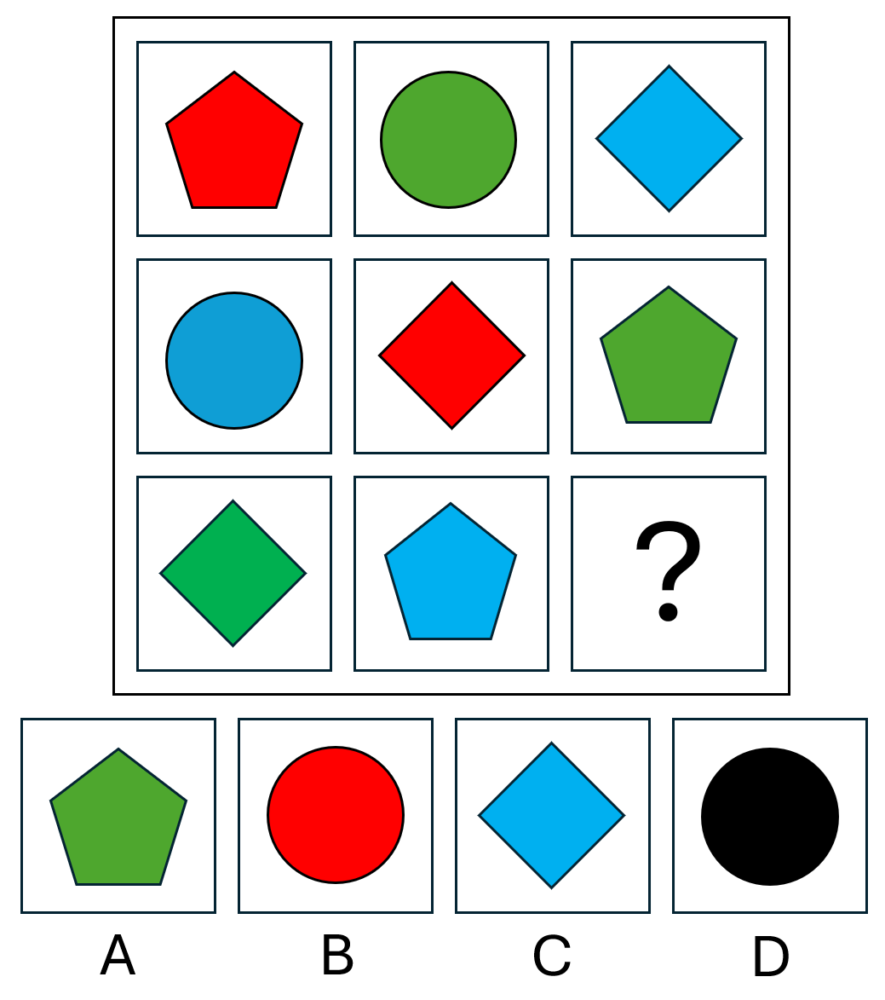

<!DOCTYPE html>
<html>
<head>
    <title>Pattern Perception Study</title>
<script src="jatos.js"></script>
<script src="https://cdn.jsdelivr.net/npm/jspsych@7.3.4/dist/index.browser.js"></script>
<script src="https://cdn.jsdelivr.net/npm/@jspsych/plugin-html-button-response@1.1.3/dist/index.browser.js"></script>
<script src="https://cdn.jsdelivr.net/npm/@jspsych/plugin-survey-text@1.1.3/dist/index.browser.js"></script>
<script src="https://cdn.jsdelivr.net/npm/@jspsych/plugin-survey-likert@1.1.3/dist/index.browser.js"></script>
<script src="https://cdn.jsdelivr.net/npm/@jspsych/plugin-html-keyboard-response@1.1.3/dist/index.browser.js"></script>
<script src="https://unpkg.com/@jspsych/plugin-survey-html-form@1.0.3/dist/index.browser.js"></script>
<script src="https://cdn.jsdelivr.net/npm/@jspsych/plugin-survey-multi-choice@1.1.3/dist/index.browser.js"></script>
<link rel="stylesheet" href="https://cdn.jsdelivr.net/npm/jspsych@7.3.4/css/jspsych.css">
    <style>
        .jspsych-content {
            max-width: 800px;
        }
        .trial-image {
            width: 400px;
            height: 400px;
            object-fit: contain;
            display: block;
            margin: 0 auto 20px auto;
            border: 1px solid #ccc;
        }
        .trial-button {
            display: block;
            width: 420px;
            margin: 10px auto;
            padding: 12px 24px;
            font-size: 15px;
            cursor: pointer;
            background-color: #f0f0f0;
            border: 2px solid #999;
            border-radius: 5px;
        }
        .level-counter {
            text-align: center;
            font-size: 14px;
            color: #666;
            margin-bottom: 20px;
        }
        .response-box {
            display: block;
            width: 400px;
            height: 100px;
            margin: 10px auto;
            font-size: 15px;
            padding: 8px;
        }
    </style>
</head>
<body></body>
<script>


// -------------------------------------------------------
// INITIALISE JSPSYCH
// -------------------------------------------------------

var jsPsych;

jatos.onLoad(function() {

    jsPsych = jsPsychModule.initJsPsych({
        on_finish: function() {
            var resultData = jsPsych.data.get().json();
            jatos.submitResultData(resultData, jatos.startNextComponent);
        }
    });

// -------------------------------------------------------
// BUILD THE TIMELINE
// -------------------------------------------------------

var timeline = [];

// -------------------------------------------------------
// WELCOME SCREEN
// -------------------------------------------------------

var welcome = {
    type: jsPsychHtmlButtonResponse,
    stimulus: '<h2>Welcome to the Pattern Perception Study</h2>' +
              '<p>Thank you for taking the time to consider participating in this study.</p>' +
              '<p>Participation will take approximately 10-15 minutes of your time.</p>' +
              '<p>Please click the button below to read the participation Information Sheet.</p>',
    choices: ['INFORMATION SHEET']
};

timeline.push(welcome);


    
// -------------------------------------------------------
// INFORMATION SHEET
// -------------------------------------------------------
var information_sheet = {
    type: jsPsychHtmlButtonResponse,
stimulus: `
  <div style="max-width: 800px; margin: 0 auto; text-align: left; font-size: 15px; line-height: 1.6;">

    <div style="margin-bottom: 20px;">
      
    </div>

    <h2 style="text-align: left;">Participant Information Sheet</h2>
    <p><em>Date that data collection will start: 3 July, 2026</em></p>

    <h3 style="text-align: left;">Project Title</h3>
    <p><strong>Making Sense of the Noise: Individual Differences in Visual Pattern Perception</strong></p>

    <p>Kia ora,</p>
    <p>You are invited to participate in a research study exploring factors that influence human visual perception and pattern detection.</p>
    <p>This study is being conducted by Lucy Daylight, a postgraduate student in the Department of Psychology at the Auckland University of Technology (AUT). This research is being carried out as a partial requirement for the Bachelor of Health Science (Honours) degree. The project is being supervised by Dr. Erik Landhuis and Dr. Jay Wood from the School of Social Sciences and Humanities.</p>

    <h3 style="text-align: left;">What is the purpose of this research?</h3>
    <p>When processing complex environments, our brains constantly look for structure and meaning in the things we see. The purpose of this study is to understand how individual differences and varying task experiences influence our ability to detect patterns in visual stimuli (images). By participating, you will help us to understand the psychological processes behind every-day human perception. The findings from this research may be published in academic journals and presented at professional conferences.</p>

    <h3 style="text-align: left;">How was I identified and why am I being invited to participate in this research?</h3>
    <p>You have expressed interest in taking part in this research by using the URL or QR code on advertisements posted on social media, or by being provided this link by someone you know. Participation in this study is open to anyone over the age of 16. We will not ask you to provide information about yourself that might identify you, thus participation is entirely anonymous (that is, we won't know who you are).</p>

    <h3 style="text-align: left;">How do I agree to participate in this research?</h3>
    <p>Your participation in this research is voluntary (it is your choice), and whether you choose to participate will neither advantage nor disadvantage you. Because this is an anonymous online study, you do not need to complete or sign a physical consent form; instead, your consent is assumed by your voluntary decision to proceed.</p>
    <p>You are free to withdraw from the study at any time. To do this, simply close your browser window or the application (App) the survey is presented on. However, please note that because this is a fully anonymous study, it will not be possible to withdraw your information after you have submitted it, as we have no way of tracing which responses belong to you. Submission of responses in this study will be taken as final consent and agreement to participate.</p>

    <h3 style="text-align: left;">What will my participation involve?</h3>
    <p>If you agree to take part, you will be asked to complete a series of pattern detection tasks. That is, you will be shown images, and for each image you will be asked tell us what you think the pattern is, or if you can detect any hidden images. You will also be asked to complete a short 15-item questionnaire. Participation in this research should take no more than 10 to 15 minutes of your time.</p>

    <h3 style="text-align: left;">What are the benefits?</h3>
    <p>While there may be no direct personal benefit to you from participating, your contribution will help advance scientific knowledge regarding how people perceive patterns and interpret visual information. Additionally, completion of this study will contribute to the completion of my Bachelor of Health Sciences (Honours) degree in Psychology.</p>

    <h3 style="text-align: left;">What are the costs?</h3>
    <p>Participation in this study should take no more than 10–15 minutes of your time. Other than time, there are no further costs to participating in this study.</p>

    <h3 style="text-align: left;">Will the results of the study be published?</h3>
    <p>The results of this research will be published in an Honours dissertation. Results may be published in peer-reviewed academic journals. Results may also be presented during conferences or seminars to wider professional and academic communities. Any published results will include only summarised data, and it will not be possible for you to be identified in those results.</p>

    <h3 style="text-align: left;">What are the discomforts and risks?</h3>
    <p>There are no significant risks or discomforts associated with this study. The visual and cognitive tasks are standard psychological exercises. It is possible that some participants might feel a brief moment of mild frustration if they find the visual or problem-solving elements challenging.</p>

    <h3 style="text-align: left;">How will these discomforts and risks be alleviated?</h3>
    <p>It is unlikely that participation in this research will cause any serious risk or discomfort, other than the possibility that some participants might feel a brief moment of mild frustration if they find the visual or problem-solving elements challenging. However, you are free to withdraw from this study at any time. To do this, simply close your browser window or the application (App) the survey is presented on. If, after completing this study, you feel you need someone to talk to, you can contact:</p>
    <ul>
      <li><strong>Youthline:</strong> 0800 376 633 (text 234) – Support available 24/7</li>
      <li><strong>Lifeline:</strong> 0800 543 354 – Support available 24/7</li>
    </ul>

    <h3 style="text-align: left;">What will happen to information about me?</h3>
    <p>Participation in this study is anonymous, and we will not ask you to provide any information that could identify you. As this is an anonymous study it will not be possible to withdraw your information after you have submitted it. All data from your responses will be stored securely in AUT-approved OneDrive storage and will only be accessible to researchers assigned to the project. If the results from this study are published in a scientific journal, we may be required to upload the data to an open scientific repository. Note that we will not collect information about you that could identify you. Even we, as researchers, won't know who you are. We will not on-sell your responses to any third parties.</p>

    <h3 style="text-align: left;">What opportunity do I have to consider this invitation?</h3>
    <p>This study will be available until August 31, 2026.</p>

    <h3 style="text-align: left;">Will I receive feedback on the results of this research?</h3>
    <p>Upon completion of the study, you will have the opportunity to access a summary of the findings. To get a summary of the results from this research, please follow this link:<br>
    <a href="https://aut.au1.qualtrics.com/jfe/form/SV_38GDIaTOEEkDX70" target="_blank">https://aut.au1.qualtrics.com/jfe/form/SV_38GDIaTOEEkDX70</a></p>
    <p>A summary of the research findings will be uploaded upon completion of the study. We anticipate that a summary of the findings will be available in November of this year (2026).</p>
    <p>Due to the anonymous nature of this study, we will not be able to give you feedback about your individual responses.</p>

    <h3 style="text-align: left;">What do I do if I have concerns about this research?</h3>
    <p>Any concerns regarding the nature of this project should be notified in the first instance to the Project Supervisor, Dr Erik Landhuis (Email: <a href="mailto:erik.landhuis@aut.ac.nz">erik.landhuis@aut.ac.nz</a>; telephone 09 921 9999 extension 6645).</p>
    <p>Concerns regarding the conduct of the research should be notified to the Executive Secretary of AUTEC, <a href="mailto:ethics@aut.ac.nz">ethics@aut.ac.nz</a>, (+649) 921 9999 ext 6038.</p>

    <h3 style="text-align: left;">Who do I contact for further information about this research?</h3>
    <p>Please keep this Information Sheet for your future reference. You are also able to contact the research team as follows:</p>
    <p><strong>Researcher Contact Details:</strong><br>
    Lucy Daylight: <a href="mailto:drb5545@autuni.ac.nz">drb5545@autuni.ac.nz</a></p>
    <p><strong>Project Supervisor Contact Details:</strong><br>
    Dr Erik Landhuis: <a href="mailto:erik.landhuis@aut.ac.nz">erik.landhuis@aut.ac.nz</a>, +64 921 9999 extension 6645.<br>
    Dr Jay Wood: <a href="mailto:jay.wood@aut.ac.nz">jay.wood@aut.ac.nz</a>, +64 9 921 9999 extension 8506.</p>

    <p><em>Approved by the Auckland University of Technology Ethics Committee on 2 July, 2026, AUTEC Reference number 26/187.</em></p>

    <hr style="margin: 30px 0;">
    <p><strong>Download a PDF copy of this Information Sheet:</strong><br>
    <a href="docs/Pattern_Perception_Info_Sheet_FINAL.pdf" target="_blank" 
       style="display: inline-block; padding: 10px 20px; background-color: #2196F3; color: white; 
              text-decoration: none; border-radius: 5px; margin-top: 5px;">
      📄 Download Information Sheet (PDF)
    </a></p>

  </div>
`,
    choices: [
        '<b>I AGREE TO PARTICIPATE IN THIS STUDY</b>',
        '<b>I HAVE DECIDED I DON'T WANT TO PARTICIPATE IN THIS STUDY</b>'
    ],
    data: { trial_type: 'information_sheet' }
};
timeline.push(information_sheet);

// If participant declines, show thank-you and end the study
var declined_screen = {
    type: jsPsychHtmlButtonResponse,
    stimulus: '<h2>Thank you</h2>' +
              '<p>Thank you for your time. You may now close this window.</p>',
    choices: ['CLOSE'],
    on_finish: function() {
        jsPsych.endExperiment();
    }
};

var if_declined = {
    timeline: [declined_screen],
    conditional_function: function() {
        var last = jsPsych.data.get().last(1).values()[0];
        return last.response === 1; // Button index 1 = decline
    }
};
timeline.push(if_declined);

var transition_to_ravens = {
    type: jsPsychHtmlButtonResponse,
    stimulus: `
        <div style="max-width: 800px; margin: 0 auto; text-align: left; line-height: 1.6;">
            <h2>Study Overview</h2>
            <p>There are four parts to this study.<br>
            <ul>
               <li><b>Pattern identification</b> - 10 trials that will take about 3-7 minutes to complete.</li>
               <li><b>Image recognition</b> - 10 trials that will take about 3-7 minutes to complete.</li>
               <li><b>Brief questionnaire</b> - 15 questions that will take about 2-3 minutes to complete.</li>
               <li><b>Demographics</b> - 4 basic questions asking a little bit about you.</li>
            </ul>
            <p>Please click the "Continue" button if you are ready to begin Part 1.</p>
        </div>
    `,
    choices: ['CONTINUE'],
};
timeline.push(transition_to_ravens);
    
// ============================
// RAVEN'S PROGRESSIVE MATRICES
// ============================

// Randomly assign condition (1, 2, or 3)
var rpm_condition = jsPsych.randomization.sampleWithoutReplacement([1, 2, 3], 1)[0];

// Condition 2 feedback: which trials get positive feedback (trial 3 only)
var rpm_cnd2_feedback = ['negative','negative','positive','negative','positive','negative','negative','negative','negative','negative'];

// --- PRACTICE TRIAL ---
var rpm_practice = {
    type: jsPsychHtmlButtonResponse,
    stimulus: `
        <div style="max-width: 800px; margin: 0 auto; text-align: left; line-height: 1.6;">
            <h2>Part 1: Pattern Identification</h2>
            <p>In this first part, you will be asked to solve 10 pattern identification problems.<br>
            <p>Before you start, let's explain the task with an example.</p>
            <p>In the image at the bottom of this page you see three shapes: circles, pentagons, and diamonds.<br>
               Also, the colour of the shapes vary: red, green, or blue.</p>
               So...<br>
            <ul>
               <li>Top row - a red pentagon, a green circle, a blue diamond.</li>
               <li>Middle row - a blue circle, a red diamond, a green pentagon.</li>
               <li>Bottom row - a green diamond, a blue pentagon, and a question mark.</li>
            </ul>
            <p>The pattern appears to be: each row (and each column) includes <b>one</b> of each shape (i.e., 1 diamond, 1 circle, & 1 pentagon).<br>
               And each row (and each column) includes <b>one</b> of the three colours (i.e., red, green, & blue).</p>
            <p>As you can see, 'red' and 'circle' are missing from row 3 and column 3.<br>From this we can work out that the missing symbol in the last square with the question mark should be the red circle.<br>
               Therefore, option B is the correct response.</p> 
            <em>Note that this is a relatively easy one — the ones that follow will be more difficult.<br>
                But the general idea is the same.</em></p>
            <p><strong>Please click any one of the four buttons below the image (labelled A, B, C, or D) to continue.</strong></p>
            <div style="text-align: center;">
                
            </div>
        </div>
    `,
    choices: ['A', 'B', 'C', 'D'],
button_html: '<button class="jspsych-btn" style="font-size: 1.8em; padding: 18px 48px; margin: 8px;">%choice%</button>',
    data: { trial_type_custom: 'rpm_practice' },
    on_finish: function(data) {
        data.response_label = ['A', 'B', 'C', 'D'][data.response];
    }
};

// Practice feedback
var rpm_practice_feedback = {
    type: jsPsychHtmlButtonResponse,
    stimulus: `
        <div style="max-width: 750px; margin: 0 auto; text-align: center; line-height: 1.6;">
           <p>Let's start the first real trial.</p>
        </div>
    `,
    choices: ['Please take me to the first trial']
};

timeline.push(rpm_practice);
timeline.push(rpm_practice_feedback);

// --- MAIN TRIALS ---
for (var i = 1; i <= 10; i++) {
    var trl = String(i).padStart(2, '0');
    var cnd = String(rpm_condition).padStart(2, '0');
    var rpm_img = 'images/ravens/rpm_cnd' + cnd + '_trl' + trl + '.png';

    var rpm_trial = {
        type: jsPsychHtmlButtonResponse,
        stimulus: `
            <div style="max-width: 800px; margin: 0 auto; text-align: left; line-height: 1.6;">
                <p>Which of the four squares labelled A, B, C, or D<br>
                   do you think belongs in the square with the question mark?</p>
                <p>Please click one of the 4 buttons below the image (labelled A, B, C, & D) for your answer.</p>
                <div style="text-align: center;">
                    
                </div>
            </div>
        `,
        choices: ['A', 'B', 'C', 'D'],
    button_html: '<button class="jspsych-btn" style="font-size: 1.8em; padding: 18px 48px; margin: 8px;">%choice%</button>',
        data: {
            trial_type_custom: 'rpm_trial',
            rpm_condition: rpm_condition,
            trial_number: i
        },
        on_finish: function(data) {
            data.response_label = ['A', 'B', 'C', 'D'][data.response];
        }
    };
    timeline.push(rpm_trial);

var feedback_icon = '';
    var feedback_text = '';

    if (rpm_condition === 1) {
        feedback_icon = '<p style="font-size: 5em; color: green; margin: 10px 0;">✓</p>';
        feedback_text = 'Well done, that was the correct answer.';
    } else if (rpm_condition === 2) {
        if (rpm_cnd2_feedback[i - 1] === 'positive') {
            feedback_icon = '<p style="font-size: 5em; color: green; margin: 10px 0;">✓</p>';
            feedback_text = 'Well done, that was the correct answer.';
        } else {
            feedback_icon = '<p style="font-size: 5em; color: red; margin: 10px 0;">✗</p>';
            feedback_text = 'Unfortunately, that is not the correct answer.';
        }
    }

    var rpm_next_page = {
        type: jsPsychHtmlButtonResponse,
        stimulus: (feedback_text || feedback_icon)
            ? `<div style="max-width: 750px; margin: 0 auto; text-align: center; line-height: 1.8;">
                   ${feedback_icon}
                   <p style="font-size: 1.4em;">${feedback_text}</p>
               </div>`
            : `<div style="max-width: 750px; margin: 0 auto;"></div>`,
        choices: ['Please take me to the next trial'],
        button_html: '<button class="jspsych-btn" style="font-size: 1.2em; padding: 14px 36px; margin-top: 20px;">%choice%</button>'
    };
    timeline.push(rpm_next_page);
}

var transition_to_bnfc = {
    type: jsPsychHtmlButtonResponse,
    stimulus: `
        <div style="max-width: 800px; margin: 0 auto; text-align: left; line-height: 1.6;">
            <p>Excellent, you've completed the image recognition task.<br>
               Let's move on to part 3 of the study.<br>
               This part should only take a couple of minutes, so you've nearly finished.</p>
            <h2>Part 3: Short Questionnaire</h2>
            <p>On the next page you will see a series of 15 short statements.<br>
               Please tell us how much you disagree or agree with each statement<br>
               from "<b>Completely disagree</b>" on the far left-hand-side<br>
               to "<b>Completely agree</b>" on the far right-hand-side</p>
            <p>There are no 'right' or 'wrong' answers.<br>
               Please tell us what you honestly think.</p>
        </div>
    `,
    choices: ['CONTINUE'],
};
    
var bNFC = {
    type: jsPsychSurveyLikert,
    preamble: '<p>Please rate your agreement with each of the following statements.</p>',
    questions: [
        {prompt: "I don't like situations that are uncertain.", labels: ["Completely disagree","Disagree","Disagree a little","Agree a little","Agree","Completely agree"], required: true},
        {prompt: "I dislike questions which could be answered in many different ways.", labels: ["Completely disagree","Disagree","Disagree a little","Agree a little","Agree","Completely agree"], required: true},
        {prompt: "I find that a well ordered life with regular hours suits my temperament.", labels: ["Completely disagree","Disagree","Disagree a little","Agree a little","Agree","Completely agree"], required: true},
        {prompt: "I feel uncomfortable when I don't understand the reason why an event occurred in my life.", labels: ["Completely disagree","Disagree","Disagree a little","Agree a little","Agree","Completely agree"], required: true},
        {prompt: "I feel irritated when one person disagrees with what everyone else in a group believes.", labels: ["Completely disagree","Disagree","Disagree a little","Agree a little","Agree","Completely agree"], required: true},
        {prompt: "I don't like to go into a situation without knowing what I can expect from it.", labels: ["Completely disagree","Disagree","Disagree a little","Agree a little","Agree","Completely agree"], required: true},
        {prompt: "When I have made a decision, I feel relieved.", labels: ["Completely disagree","Disagree","Disagree a little","Agree a little","Agree","Completely agree"], required: true},
        {prompt: "When I am confronted with a problem, I'm dying to reach a solution very quickly.", labels: ["Completely disagree","Disagree","Disagree a little","Agree a little","Agree","Completely agree"], required: true},
        {prompt: "I would quickly become impatient and irritated if I would not find a solution to a problem immediately.", labels: ["Completely disagree","Disagree","Disagree a little","Agree a little","Agree","Completely agree"], required: true},
        {prompt: "I don't like to be with people who are capable of unexpected actions.", labels: ["Completely disagree","Disagree","Disagree a little","Agree a little","Agree","Completely agree"], required: true},
        {prompt: "I dislike it when a person's statement could mean many different things.", labels: ["Completely disagree","Disagree","Disagree a little","Agree a little","Agree","Completely agree"], required: true},
        {prompt: "I find that establishing a consistent routine enables me to enjoy life more.", labels: ["Completely disagree","Disagree","Disagree a little","Agree a little","Agree","Completely agree"], required: true},
        {prompt: "I enjoy having a clear and structured mode of life.", labels: ["Completely disagree","Disagree","Disagree a little","Agree a little","Agree","Completely agree"], required: true},
        {prompt: "I do not usually consult many different opinions before forming my own view.", labels: ["Completely disagree","Disagree","Disagree a little","Agree a little","Agree","Completely agree"], required: true},
        {prompt: "I dislike unpredictable situations.", labels: ["Completely disagree","Disagree","Disagree a little","Agree a little","Agree","Completely agree"], required: true}
    ],
    randomize_question_order: false
};

var transition_to_demographics = {
    type: jsPsychHtmlButtonResponse,
    stimulus: `
        <div style="max-width: 800px; margin: 0 auto; text-align: left; line-height: 1.6;">
            <h2>Part 4: About You</h2>
            <p>Almost done!<br>To finish, we just want to know a little bit about you.<br>
            This information is used to provide a snapshot of the people who participated in this study.</p>
        </div>
    `,
    choices: ['CONTINUE'],
};
    
var demographics = {
    type: jsPsychSurveyHtmlForm,
    preamble: '<p style="font-size:18px;"><strong>Background Information</strong></p><p>Please answer the following questions.</p>',
    html: `
        <div style="margin-bottom:30px;">
            <p><strong>Are you:</strong></p>
            <label><input type="radio" name="gender" value="Male" required onchange="document.getElementById('gender_other_box').style.display='none'"> Male</label><br><br>
            <label><input type="radio" name="gender" value="Female" onchange="document.getElementById('gender_other_box').style.display='none'"> Female</label><br><br>
            <label><input type="radio" name="gender" value="Other" onchange="document.getElementById('gender_other_box').style.display='block'"> Other</label><br>
            <div id="gender_other_box" style="display:none; margin-left:20px; margin-top:5px;">
                <input type="text" name="gender_other" placeholder="Please describe...">
            </div><br>
            <label><input type="radio" name="gender" value="Prefer not to say" onchange="document.getElementById('gender_other_box').style.display='none'"> Prefer not to say</label>
        </div>

        <div style="margin-bottom:30px;">
            <p><strong>What year were you born?</strong></p>
            <select name="birth_year" required>
                <option value="">-- Select a year --</option>
                ${Array.from({length: 86}, (_, i) => 2011 - i).map(y => `<option value="${y}">${y}</option>`).join('')}
            </select>
        </div>

        <div style="margin-bottom:30px;">
            <p><strong>What is your ethnicity?</strong></p>
            <p style="font-size:14px; color:#666;">Select all that apply.</p>
            <label><input type="checkbox" name="ethnicity_nze" value="New Zealand European"> New Zealand European</label><br><br>
            <label><input type="checkbox" name="ethnicity_maori" value="Māori"> Māori</label><br><br>
            <label><input type="checkbox" name="ethnicity_pasifika" value="Pasifika"> Pasifika</label><br><br>
            <label><input type="checkbox" name="ethnicity_asian" value="Asian"> Asian</label><br><br>
            <label><input type="checkbox" name="ethnicity_other_european" value="Other European"> Other European</label><br><br>
            <label><input type="checkbox" name="ethnicity_other" value="Other" onchange="document.getElementById('ethnicity_other_box').style.display=this.checked?'block':'none'"> Other</label><br>
            <div id="ethnicity_other_box" style="display:none; margin-left:20px; margin-top:5px;">
                <input type="text" name="ethnicity_other_text" placeholder="Please describe...">
            </div>
        </div>
        <div style="margin-bottom:30px;">
            <p><strong>Please tell us what kind of device you used to complete this study.</strong></p>
            <label><input type="radio" name="device" value="Smartphone" required> Smartphone</label><br><br>
            <label><input type="radio" name="device" value="iPad or other tablet"> iPad or other tablet</label><br><br>
            <label><input type="radio" name="device" value="Laptop computer"> Laptop computer</label><br><br>
            <label><input type="radio" name="device" value="Desktop computer"> Desktop computer</label><br><br>
            <label><input type="radio" name="device" value="Other"> Other</label>
        </div>
    `,
    button_label: 'NEXT'
};

var debrief = {
    type: jsPsychHtmlButtonResponse,
    stimulus: `
        <div style="max-width: 750px; margin: 0 auto; text-align: left; line-height: 1.6;">
            <h2 style="text-align: center;">Thank You for Participating</h2>

            <p>We greatly appreciate the time, effort, and concentration that you devoted to completing these tasks. Some aspects of the study were intentionally designed to be challenging, and it is completely normal to have found parts of the experience difficult, frustrating, or uncertain.</p>

            <p>If at any point you felt that you were not performing as well as you would have liked, please be reassured that this should not be interpreted as a reflection of your intelligence, abilities, or personal skills. Many people experience similar feelings when completing these types of tasks, and finding them difficult is entirely expected.</p>

            <p>Because data collection is still ongoing, we are unable to provide a full explanation of the study at this stage. A complete explanation of the study's purpose and design will be made available once all participants have completed the research. To obtain a copy of the complete explanation of the study's purpose and design, as well as a summary of the findings, please use the following link:</p>

            <p style="text-align: center;"><a href="https://aut.au1.qualtrics.com/jfe/form/SV_38GDIaTOEEkDX70" target="_blank">https://aut.au1.qualtrics.com/jfe/form/SV_38GDIaTOEEkDX70</a></p>

            <p>Alternatively, you may request a copy of the results by emailing Dr Erik Landhuis at <a href="mailto:erik.landhuis@aut.ac.nz">erik.landhuis@aut.ac.nz</a>.</p>

            <p>We strongly encourage you to obtain a copy of the full debrief and study findings once they become available — we think you will find them interesting.</p>

            <p>The above information is also available in the Participant Information Sheet, which can be downloaded here: [Insert copy of approved Participant Information Sheet here]</p>

            <p>Finally, we would like to thank you for participating in this research. The time and effort you have given to this project are sincerely appreciated.</p>

            <p><em>Lucy, Jay, and Erik</em></p>

            <p><b>PLEASE CLICK THE "FINISH" BUTTON TO SUBMIT YOUR RESPONSES</b></P>
        </div>
    `,
    choices: ['FINISH'],
    button_html: '<button class="jspsych-btn" style="font-size: 16px; padding: 10px 30px; margin-top: 20px;">%choice%</button>'
};
    
        // -------------------------------------------------------
        // SNOWY PICTURES SETUP
        // -------------------------------------------------------
        var baseURL = 'https://eriklandhuis.github.io/pattern-perception-study/images';
        var rpmURL = 'https://eriklandhuis.github.io/pattern-perception-study/images/rpm';

    // Build all 10 trials (5 hit, 5 fa)
    var allTrials = [];
    for (var i = 1; i <= 5; i++) {
        var setNum = "0" + i;
        allTrials.push({ condition: "hit", set: setNum });
        allTrials.push({ condition: "fa",  set: setNum });
    }

        // Shuffle trial order (randomised per participant, no replacement)
        var shuffledTrials = jsPsych.randomization.shuffle(allTrials);
        // -------------------------------------------------------
        // SNOWY PICTURES INSTRUCTIONS
        // -------------------------------------------------------

    var transition_to_snowy = {
    type: jsPsychHtmlButtonResponse,
    stimulus: `
        <div style="max-width: 800px; margin: 0 auto; text-align: left; line-height: 1.6;">
            <p>Great, you have now completed part 1 of this study.</p>
            <p>Let's move on to part 2.</p>
            <h2>Part 2: Image Recognition</h2>
            <p>In this next part, your task is to see if you can identify anything in the pixilated images.</p>
            <p>Please click "Continue" read the instructions for the next task.</p>
        </div>
    `,
    choices: ['CONTINUE'],
};
timeline.push(transition_to_snowy);
    
var snowy_instructions = {
    type: jsPsychHtmlButtonResponse,
    stimulus: `
        <div style="max-width: 700px; margin: auto; text-align: left;">
            <h2>Image Identification Task</h2>
            <p>In this part of the study, you will be shown a series of pixilated images.</p>
            <p>The first image in each set will be very pixilated, and it is unlikely that you will see anything meaningful. Below that image, you will see two buttons:</p>
            <ul>
                <li><i>"I can't see anything. Please show me the next image"</i></li>
                <li><i>"I think I can identify the image"</i></li>
            </ul>
            <p>If you select <i>"I can't see anything"</i>, a slightly less pixilated version of the same image will be shown.<br>If, after clicking that, you still cannot see anything meaningful, select <i>"I can't see anything"</i> again.<br>With each click, the image will become a little bit clearer (less pixilated).</p>
            <p>As soon as you think you know what the image shows, select <i>"I think I can identify the image"</i>. A text box will then appear with the instruction:</p>
            <p><i>"Please type what you think you saw in the box below."</i></p>
            <p>Type your answer into the text box.</p>
            <p>Your goal is to identify the hidden image using <b><u>the least number of <i>"I can't see anything"</i> responses</u></b>.</p>
            <p>If you have not identified the image after clicking <i>"I can't see anything"</i> 10 times, a text box will automatically appear. At this point, please type your best guess about what the image might show.</p>
            <p>There will be 10 trials in this part.</p>
        </div>
    `,
    choices: ['Start Image Task']
};
timeline.push(snowy_instructions);
        // -------------------------------------------------------
        // SNOWY PICTURES TRIALS
        // -------------------------------------------------------
        for (var t = 0; t < shuffledTrials.length; t++) {
            (function(trialInfo, trialNumber) {

                // These closure variables are the reliable way to record data
                var _threshold = null;
                var _response_text = '';
                var _identified = false;

                var snowy_trial = {
                    type: jsPsychHtmlButtonResponse,
                    stimulus: '<p id="trial-instruction" style="font-size:16px;">Please look carefully at the image below.<br>Select the option that best describes what you see.</p>' +
                              '' +
                              '<p id="level-counter" class="level-counter">Image 1 of 10</p>',
                    choices: ["I can't see anything. Please show me the next image.", "I think I know what is shown in the image."],
                    button_html: '<button class="trial-button">%choice%</button>',
                    on_load: function() {
                        var currentLevel = 10;
                        var clickCount = 0;

                        function showImage(level) {
                            var lvl = (level < 10) ? "0" + level : "" + level;
                            var imageURL = baseURL + "/" + trialInfo.condition + "/" +
                                trialInfo.condition + "_st" + trialInfo.set + "_lvl" + lvl + ".png";
                            document.getElementById("trial-image").src = imageURL;
                            var viewed = 11 - level;
                            document.getElementById("level-counter").innerHTML = "Image " + viewed + " of 10";
                        }

                        var buttons = document.querySelectorAll(".trial-button");

                        // Button 1: I can't see anything
                        buttons[0].addEventListener("click", function(e) {
                            e.stopImmediatePropagation();
                            clickCount++;
                            currentLevel--;

if (currentLevel < 1) {
    _threshold = 10;
    _identified = false;
    buttons[0].style.display = "none";
    buttons[1].style.display = "none";
    var responseDiv = document.createElement("div");
    responseDiv.innerHTML =
        '<p style="font-size:16px; text-align:center;">You have viewed all the images for this set.</p>' +
        '<p style="font-size:16px; text-align:center;">Please type what you think you saw in the box below. Guess if necessary.</p>' +
        '<textarea id="response-text" rows="3" style="width:60%; font-size:15px; padding:8px;"></textarea><br>' +
        '<button id="btn-next" class="trial-button" style="display:block; margin:12px auto;">Please take me to the next trial.</button>';
    document.getElementById("jspsych-html-button-response-stimulus").appendChild(responseDiv);
    document.getElementById("btn-next").addEventListener("click", function() {
        _response_text = document.getElementById("response-text").value;
        jsPsych.finishTrial();
    });
} else {
    showImage(currentLevel);
}
}, true);
                        
                        // Button 2: I think I know what is shown
                        buttons[1].addEventListener("click", function(e) {
                            e.stopImmediatePropagation();
                            _threshold = clickCount;
                            _identified = true;

                            buttons[0].style.display = "none";
                            buttons[1].style.display = "none";

                            var responseDiv = document.createElement("div");
                            responseDiv.innerHTML =
                                '<p style="font-size:16px; text-align:center;">Please type what you think you saw in the box below:</p>' +
                                '<textarea id="response-text" rows="3" style="width:60%; font-size:15px; padding:8px;"></textarea><br>' +
                                '<button id="btn-next" class="trial-button" style="display:block; margin:12px auto;">Please take me to the next trial.</button>';
                            document.getElementById("jspsych-html-button-response-stimulus").appendChild(responseDiv);

                            document.getElementById("btn-next").addEventListener("click", function() {
                                _response_text = document.getElementById("response-text").value;
                                jsPsych.finishTrial();
                            });
                        }, true);
                    },
                    // on_finish is where data is reliably saved to jsPsych's data store
                    on_finish: function(data) {
                        data.task          = 'snowy_pictures';
                        data.trial_number  = trialNumber;
                        data.condition     = trialInfo.condition;
                        data.stimulus_set  = trialInfo.set;
                        data.threshold     = _threshold !== null ? _threshold : 10;
                        data.identified    = _identified;
                        data.response_text = _response_text;
                    }
                };

                timeline.push(snowy_trial);
                
            })(shuffledTrials[t], t + 1);
        }
    
        timeline.push(transition_to_bnfc);
        timeline.push(bNFC);
        timeline.push(transition_to_demographics);
        timeline.push(demographics);
        timeline.push(debrief);
    
        // -------------------------------------------------------
        // RUN THE STUDY
        // -------------------------------------------------------
    jsPsych.run(timeline);

}); // closes jatos.onLoad
 
</script>
</html> 

